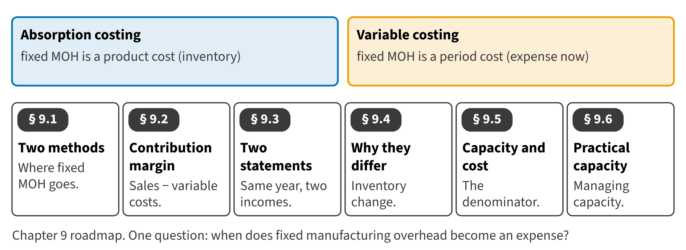

Part II · Measuring product cost · Chapter 9
Variable and Absorption Costing; Capacity
التكاليف المتغيرة والتكاليف الكلية والطاقة
In 2027 Beverages produced 850,000 cases of juice but sold only 830,000. Its income was $2,946,000 in the financial statements, but $2,906,000 in the internal report. Both figures are correct. They answer one question differently: when does fixed manufacturing overhead become an expense?

Start here
Then
What this chapter is tested on
| LOS | Official statement (ICMA, 2024) | In plain words | Depth here |
|---|---|---|---|
| D.1.f | demonstrate an understanding of variable (direct) costing and absorption (full) costing and the benefits and limitations of these measurement concepts | Describe the treatment of fixed manufacturing overhead under variable and absorption costing. | Full treatment |
| D.1.g | calculate inventory costs, cost of goods sold, and operating profit using both variable costing and absorption costing | Calculate inventory values and cost of goods sold under both methods. | Full treatment + Extended Example |
| D.1.h | demonstrate an understanding of how the use of variable costing or absorption costing affects the value of inventory, cost of goods sold, and operating income | Explain why operating income differs between the two methods. | Full treatment + Extended Example |
| D.1.i | prepare summary income statements using variable costing and absorption costing | Prepare summary income statements under both methods and state their benefits and limitations. | Full treatment |
| B.5.n | demonstrate an understanding of contribution margin per unit and total contribution margin, identify the appropriate use of these concepts, and calculate both unit and total contribution margin | Define and calculate the contribution margin. | Full treatment |
| D.4.h | describe how capacity level affects product costing, capacity management, pricing decisions, and financial statements | Explain how the choice of capacity level affects product costs, capacity management, pricing and the financial statements. | Full treatment |
| D.4.i | explain how using practical capacity as the denominator for the fixed cost allocation rate enhances capacity management | Explain how practical capacity helps capacity management. | Full treatment |
The official statements are quoted from the ICMA Learning Outcome Statements (effective September 1, 2024). The plain-words column restates them in simpler English. The exam may test any outcome up to Level C.
What you already know
Chapter 8 set the fixed overhead rate on a capacity denominator and closed the production-volume effect. Chapter 2 separated fixed and variable costs. Both ideas meet in this chapter.
The 8 key terms
Every scene has Check Answers and Try Again. Try Again reshuffles rather than revealing. When you are wrong, the first thing you read is the reason for the option you chose, taken from the book's own explanations. Progress is saved in this browser.